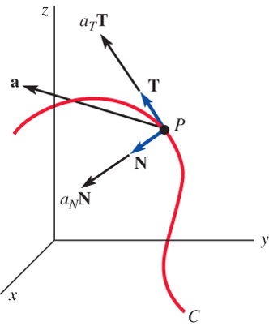
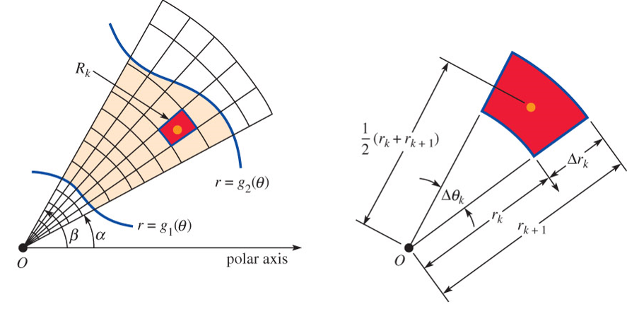
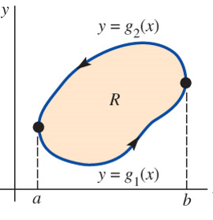
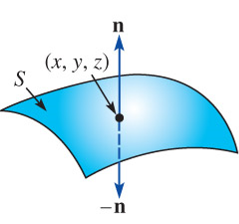
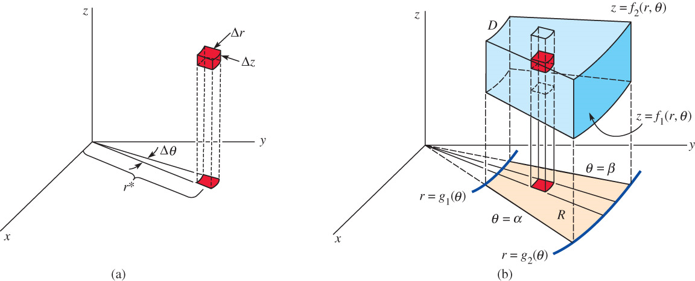
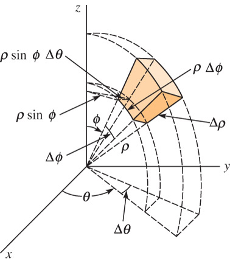

Engineering Mathematics II
Chapter 9. Vector Calculus
9.1 \(~\) Vector Functions
A parametric curve in space is a set of ordered triples \((x,y,z),\) \(~\)where
\[x=f(t), \;y=g(t), \;z=h(t)\]
are continuous on an interval: \(~a \leq t \leq b\)
\(~\)
The following
\[\mathbf{r}(t) =\left\langle f(t), \,g(t), \,h(t) \right\rangle = f(t)\,\mathbf{i} +g(t)\,\mathbf{j} +h(t)\,\mathbf{k}\]
are vector-valued functions

Limits
\(\displaystyle\lim_{t \to a} \mathbf{r}(t)=\left\langle \lim_{t \to a} f(t), \;\lim_{t \to a} g(t), \;\lim_{t \to a} h(t) \right\rangle\)
\(~\)
If \(~\)\(\displaystyle\lim_{t\to a} \mathbf{r}_1(t)=\mathbf{L}_1\) and \(~\)\(\displaystyle\lim_{t\to a} \mathbf{r}_2(t)=\mathbf{L}_2\), \(~\)then
\(\displaystyle\lim_{t\to a} c\mathbf{r}_1(t)=c\mathbf{L}_1\)
\(\displaystyle\lim_{t\to a} \left[\mathbf{r}_1(t) +\mathbf{r}_2(t) \right] =\mathbf{L}_1 +\mathbf{L}_2\)
\(\displaystyle\lim_{t\to a} \left[\mathbf{r}_1(t) \cdot \mathbf{r}_2(t) \right] =\mathbf{L}_1 \cdot \mathbf{L}_2\)
Continuity
A vector function \(\mathbf{r}\) is said to be continuous at \(t=a\) \(~\) if
\(~\mathbf{r}(a)\) is defined,
\(~\displaystyle\lim_{t\to a} \mathbf{r}(t)\) exists, and
\(~\displaystyle\lim_{t\to a} \mathbf{r}(t) = \mathbf{r}(a)\)
Derivatives
The derivative of a vector function \(\mathbf{r}\) is
\[\mathbf{r}'(t) = \lim_{\Delta t\to 0} \frac{1}{\Delta t} \left[ \mathbf{r}(t +\Delta t) -\mathbf{r}(t) \right]\]
for all \(\,t\,\) for which the limit exists
If \(~\mathbf{r}(t) = \langle f(t), g(t), h(t) \rangle,\) where \(~f\), \(g\), and \(h\,\) are differentiable, then
\[\mathbf{r}'(t) = \left\langle f'(t), g'(t), h'(t) \right\rangle\]
When \(\mathbf{r}\) have continuous first derivative and \(\mathbf{r}'(t)\neq\mathbf{0}~\) for all \(~t~\) in the open interval \((a,b)\), \(~\)then \(\mathbf{r}\) is said to be a smooth function
üòÖ
In the case of the second derivative, \(~\)we have
\[ \mathbf{r}''(t) = \left\langle f''(t), g''(t), h''(t) \right\rangle = f''(t)\mathbf{i} +g''(t)\mathbf{j} +h''(t)\mathbf{k} \]
Chain rule
If \(\mathbf{r}\) is a differentiable vector function and \(s=u(t)\) is a differentiable scalar function, then the derivative of \(\mathbf{r}(s)\) with respect to \(t\) is
\[\frac{d\mathbf{r}}{dt} =\frac{d\mathbf{r}}{ds} \frac{ds}{dt} =\mathbf{r}'(s) u'(t)\]
Rules of Differentiation
Let \(\mathbf{r}_1(t)\) and \(\mathbf{r}_2(t)\) be differentiable vector functions and \(u(t)\) a differentiable scalar function
- \(\displaystyle \frac{d}{dt} \left[ \mathbf{r}_1(t) +\mathbf{r}_2(t) \right] = \mathbf{r}_1'(t) +\mathbf{r}_2'(t)\)
- \(\displaystyle \frac{d}{dt} \left[ u(t)\mathbf{r}_1(t) \right] = u(t)\mathbf{r}_1'(t) +u'(t)\mathbf{r}_1(t)\)
- \(\displaystyle \frac{d}{dt} \left[ \mathbf{r}_1(t) \cdot \mathbf{r}_2(t) \right] = \mathbf{r}_1(t)\cdot\mathbf{r}_2'(t) +\mathbf{r}_1'(t)\cdot\mathbf{r}_2(t)\)
- \(\displaystyle \frac{d}{dt} \left[ \mathbf{r}_1(t) \times \mathbf{r}_2(t) \right] = \mathbf{r}_1(t)\times\mathbf{r}_2'(t) +\mathbf{r}_1'(t)\times\mathbf{r}_2(t)\)
üòÖ
Integrals
\(\displaystyle\int \mathbf{r}(t) \,dt = \left[ \int f(t) \,dt \right]\mathbf{i} +\left[ \int g(t) \,dt \right]\mathbf{j} +\left[ \int h(t) \,dt \right]\mathbf{k}\)
Length of a Space Curve
If \(~\mathbf{r}(t) = f(t)\mathbf{i} +g(t)\mathbf{j} +h(t)\mathbf{k}\;\) is a smooth function, \(~\)then it can be shown that the length of the smooth curve traced by \(~\mathbf{r}~\) is given by
\[\displaystyle s = \int_a^b \sqrt{\left[ f'(t) \right]^2 +\left[ g'(t) \right]^2 +\left[ h'(t) \right]^2}\,dt =\int_a^b \left\| \mathbf{r}'(t) \right\|\,dt\]
9.2 \(~\) Motion on a Curve
Position
Suppose a body moves along a curve \(C\) so that its position at time \(t\) is given by the vector function
\[\mathbf{r}(t) = f(t)\mathbf{i} +g(t)\mathbf{j} +h(t)\mathbf{k}\]
Velocity and Acceleration
If \(\,f\), \(g\), and \(h\) have second derivatives, \(\,\)then the vectors
\[\begin{align*} \mathbf{v}(t) &= \mathbf{r}'(t) = f'(t)\mathbf{i} +g'(t)\mathbf{j} +h'(t)\mathbf{k} \\ \mathbf{a}(t) &= \mathbf{r}''(t) = f''(t)\mathbf{i} +g''(t)\mathbf{j} +h''(t)\mathbf{k} \end{align*}\]
are called the velocity and acceleration of the particle, respectively
üòÖ
The scalar function \(\left\| \mathbf{v}(t)\right\|\) is the speed of the particle
The speed is related to arc length \(s\) by \(s'(t) = \left\| \mathbf{v}(t) \right\|\)
If a particle moves with a constant speed \(c\), \(~\) then its acceleration vector is perpendicular to the velocity vector \(\mathbf{v}\)
To see this, note that \(\mathbf{v}\cdot\mathbf{v}=c^2\). \(~\) We differentiate both sides with respect to \(t\) and obtain
\[{\scriptsize\frac{d}{dt}(\mathbf{v} \cdot \mathbf{v}) = \mathbf{v}\cdot\frac{d\mathbf{v}}{dt} +\frac{d\mathbf{v}}{dt} \cdot \mathbf{v} =2\mathbf{v}\cdot\frac{d\mathbf{v}}{dt}=0}\]
Thus, \(\displaystyle\frac{d\mathbf{v}}{dt} \cdot \mathbf{v}=0\) \(\text{ }\)or\(\text{ }\) \(\mathbf{a}(t) \cdot \mathbf{v}(t)=0~\,\) for all \(~t\)
üòÖ
Centripetal Acceleration
For circular motion in the plane, described by \(\mathbf{r}(t) = r_0 \cos\omega t \,\mathbf{i} +r_0\sin\omega t \,\mathbf{j},\) \(\text{ }\)it is evident that
\[\mathbf{r}''=-\omega^2\mathbf{r}\]
- This means that the acceleration vector \(\mathbf{a}(t)=\mathbf{r}''(t)\) points in the direction opposite to that of the position vector \(\mathbf{r}(t)\). \(~\) We then say \(~\mathbf{a}(t)\) is centripetal acceleration
9.3. Curvature and Components of Acceleration
We know that \(\mathbf{r}'(t)\) is a tangent vector to the curve \(C\), and consequently
\[\mathbf{T}(t) = \frac{\mathbf{r}'(t)}{\left\| \mathbf{r}'(t) \right\|}\]
is a unit tangent
\(~\)

\(~\)
\(~\)
\(\text{ }\) \(\text{ }\) \(\displaystyle\frac{d\mathbf{r}}{dt}=\frac{d\mathbf{r}}{ds} \frac{ds}{dt}\) \(\text{ }\) and so
\(~\)
\(~\displaystyle\frac{d\mathbf{r}}{ds} = \frac{\frac{d\mathbf{r}}{dt}}{\frac{ds}{dt}}=\frac{\mathbf{r}'(t)}{\left\| \mathbf{r}'(t) \right\|} = \mathbf{T}(t)\)
Let \(\,\mathbf{r}(t)\,\) be a vector function defining a smooth curve \(C\). \(~\) If \(s\) is the arc length parameter and \(\mathbf{T}=\frac{d\mathbf{r}}{ds}\) is the unit tangent vector, \(~\)then the curvature of \(C\) at a point is
\[\kappa=\left\|\frac{d\mathbf{T}}{ds}\right\|\]
Using the chain rule, \(~\)we can write
\[{\scriptsize\frac{d\mathbf{T}}{dt}=\frac{d\mathbf{T}}{ds}\frac{ds}{dt} \;\;\Rightarrow\;\; \frac{d\mathbf{T}}{ds}=\frac{\frac{d\mathbf{T}}{dt}}{\frac{ds}{dt}}}\]
In other words, curvature is given by \(\,\kappa(t)=\frac{\left\|\mathbf{T}'(t)\right\|}{\left\|\mathbf{r}'(t)\right\|}\)
⏩️
Tangential and Normal Components of Acceleration
The velocity of the particle on \(C\) is \(\text{ }\)\(\mathbf{v}(t)=\mathbf{r}'(t)\), \(\text{ }\)whereas its speed is \(\frac{ds}{dt}=v=\| \mathbf{v}(t) \|\). \(~\)Thus, \(\mathbf{v}(t)=v\mathbf{T}\)
Differentiating this last expression with respect to \(t\) gives acceleration
\[\mathbf{a}(t)=v\frac{d\mathbf{T}}{dt}+\frac{dv}{dt}\mathbf{T}\]
üòÖ
It follows from the differentiation of \(\mathbf{T}\cdot\mathbf{T}=1\,\) that \(\mathbf{T}\cdot \frac{d\mathbf{T}}{dt}=0\). \(~\) If \(\,\left\|\frac{d\mathbf{T}}{dt}\right\| \neq 0\), \(~\) the vector
\[\mathbf{N}(t) = \frac{\frac{d\mathbf{T}}{dt}}{\left\| \frac{d\mathbf{T}}{dt}\right\|}\]
is a unit normal to the curve \(C\). \(\text{ }\)The vector \(\mathbf{N}\) is also called the principal normal
Since curvature is \(~\kappa = \frac{\left\|\frac{d\mathbf{T}}{dt} \right\|}{v}\), \(~\) it follows that \(\frac{d\mathbf{T}}{dt}=\kappa v \mathbf{N}\). Thus
\[\mathbf{a}(t)=\kappa v^2 \mathbf{N} +\frac{dv}{dt}\mathbf{T} =a_N \mathbf{N} +a_T\mathbf{T}\]
\(~\)

Binormal
\(\mathbf{B}(t)=\mathbf{T}(t) \times \mathbf{N}(t)\)

Formulas for \(a_T\), \(a_N\), and Curvature
\[\begin{align*} \mathbf{v}\cdot\mathbf{a} &= a_N(v\mathbf{T}\cdot\mathbf{N}) +a_T(v\mathbf{T}\cdot\mathbf{T})=a_T v\\ & \Rightarrow \; a_T =\frac{dv}{dt} =\frac{\mathbf{v}\cdot\mathbf{a}}{\| \mathbf{v} \|} =\frac{\mathbf{r}'(t) \cdot \mathbf{r}''(t)}{\| \mathbf{r}'(t) \|} \end{align*}\]
\[\begin{align*} \mathbf{v}\times\mathbf{a} &= a_N(v\mathbf{T}\times\mathbf{N}) +a_T(v\mathbf{T}\times\mathbf{T}) =a_N v\mathbf{B}\\ &\Rightarrow \; a_N =\kappa v^2 =\frac{\|\mathbf{v}\times\mathbf{a}\|}{\| \mathbf{v} \|} =\frac{\| \mathbf{r}'(t) \times \mathbf{r}''(t) \|}{\| \mathbf{r}'(t) \|} \end{align*}\]
\[\kappa(t)=\frac{\| \mathbf{r}'(t)\times\mathbf{r}''(t) \|}{\| \mathbf{r}'(t) \|^3}\]
Radius of Curvature
\(\displaystyle\rho=\frac{1}{\kappa}\)

9.4 \(~\) Partial Derivatives
- Functions of Two Variables

- Level Curves

Functions of Three Variables, Level Surfaces
\[w=F(x,y,z) \;\Rightarrow \; c=F(x,y,z)\]
ex) \(~\displaystyle w=\frac{x^2+y^2}{z}\)
Partial Derivatives
\(~\)
\(\displaystyle\frac{\partial z}{\partial x}=\lim_{\Delta x \to 0} \frac{f(x+\Delta x, y) -f(x,y)}{\Delta x}=f_x\)
\(\displaystyle\frac{\partial z}{\partial y}=\lim_{\Delta y \to 0} \frac{f(x, y+\Delta y) -f(x,y)}{\Delta y}=f_y\)
\(\displaystyle\frac{\partial^2 z}{\partial x^2}=\frac{\partial}{\partial x}\left( \frac{\partial z}{\partial x} \right)=f_{xx}\)
\(\displaystyle\frac{\partial^2 z}{\partial x \partial y}=\frac{\partial}{\partial x}\left( \frac{\partial z}{\partial y} \right)=f_{xy}\)
Chain Rule
If \(z=f(u,v)\) is differentiable and \(u=g(x,y)\) and \(v=h(x,y)\) have continuous first partial derivatives, then
\[{\scriptsize\begin{align*} \frac{\partial z}{\partial x}&= \frac{\partial z}{\partial u}\frac{\partial u}{\partial x} +\frac{\partial z}{\partial v}\frac{\partial v}{\partial x}\\ \frac{\partial z}{\partial y}&= \frac{\partial z}{\partial u}\frac{\partial u}{\partial y} +\frac{\partial z}{\partial v}\frac{\partial v}{\partial y} \end{align*}}\]
If \(z=f(u,v)\) is differentiable and \(u=g(t)\) and \(v=h(t)\) are differentiable functions of a single variable \(t\), the ordinary derivative \(\frac{dz}{dt}\) is
\[{\scriptsize\frac{dz}{dt}=\frac{\partial z}{\partial u}\frac{du}{dt}+\frac{\partial z}{\partial v}\frac{dv}{dt}}\]
9.5 \(~\) Directional Derivatives
⏰
Vector Differential Operator
\[\begin{align*} \nabla &= \mathbf{i} \frac{\partial }{\partial x} +\mathbf{j}\frac{\partial }{\partial y} \\ \nabla &= \mathbf{i}\frac{\partial }{\partial x} +\mathbf{j}\frac{\partial }{\partial y} +\mathbf{k}\frac{\partial }{\partial z} \end{align*}\]
Gradient of a Function
\[\begin{align*} \nabla f &= \mathbf{i} \frac{\partial f}{\partial x} +\mathbf{j}\frac{\partial f}{\partial y} \\ \nabla F &= \mathbf{i}\frac{\partial F}{\partial x} +\mathbf{j}\frac{\partial F}{\partial y} +\mathbf{k}\frac{\partial F}{\partial z} \end{align*}\]
Generalization of Partial Differentiation
\[{\scriptsize \frac{f(x+\Delta x, y+\Delta y) -f(x,y)}{h} = \frac{f(x+h\cos\theta, y+h\sin\theta) -f(x,y)}{h}}\]
The directional derivative of \(z=f(x,y)\,\) in the direction of a unit vector \(\mathbf{u}\) is
\[ {\scriptsize D_\mathbf{u} f(x,y)} = \lim_{h\to 0} \frac{f(x+h\cos\theta, y+h\sin\theta) -f(x,y)}{h} = \nabla f(x,y)\cdot \mathbf{u}\]

Partial Proof \(~\) Let \(x\), \(y\), and \(\theta\) be fixed so that
\[g(t)=f(x+t\cos\theta,y+t\sin\theta)\]
is a function of one variable. We wish to compare the value of \(g'(0)\), \(~\) which is found by two different methods
- First, by the definition of a derivative,
\[{\scriptsize g'(0)=\lim_{h\to 0} \frac{g(0+h)-g(0)}{h} =\lim_{h\to 0}\frac{f(x+h\cos\theta,y+h\sin\theta)-f(x,y)}{h} }\]
- Second, by the chain rule,
\[{\scriptsize\begin{align*} g'(t) &=f_1(x+t\cos\theta,y+t\sin\theta)\frac{d}{dt}(x+t\cos\theta) \\ &\;\;\; +f_2(x+t\cos\theta,y+t\sin\theta)\frac{d}{dt}(x+t\sin\theta) \\ & =f_1(x+t\cos\theta,y+t\sin\theta)\cos\theta +f_2(x+t\cos\theta,y+t\sin\theta)\sin\theta \\ \text{ } \\ & \Downarrow\;t\to 0 \\ \text{ } \\ g'(0)& =f_x(x,y)\cos\theta+f_y(x,y)\sin\theta \\ & =\left[\,f_x(x,y)\,\mathbf{i}+f_y(x,y)\,\mathbf{j} \,\right]\cdot \left(\cos\theta\,\mathbf{i}+\sin\theta\,\mathbf{j}\right) \\ &=\nabla f(x,y)\cdot \mathbf{u} \end{align*}}\]
For a function \(w=F(x,y,z)\), \(~\)the directional derivative is defined by
\[{\scriptsize \displaystyle D_\mathbf{u} F(x,y,z) = \lim_{h\to 0} \frac{F(x+h\cos\alpha, y+h\cos\beta,z +h\cos\gamma) -F(x,y,z)}{h} =\nabla F(x,y,z)\cdot \mathbf{u}}\]
Maximum Value of the Directional Derivative
\[\begin{align*} \color{red}{D_\mathbf{u}\,f} &= \| \nabla f\| \| \mathbf{u} \| \cos\phi =\| \nabla f\| \cos\phi \\ &\color{red}{\Rightarrow \, -\| \nabla f\| \leq D_\mathbf{u} \,f \leq \| \nabla f \|} \end{align*}\]
- The gradient vector \(\nabla f\) points in the direction in which \(f\) increases most rapidly, whereas \(-\nabla f\) points in the direction of the most decrease of \(\,f\)
9.6 \(~\) Tangent Planes and Normal Lines
Geometric Interpretation of the Gradient
The derivative of \(\,f\left(x(t),y(t)\right)=c~\) with respect to \(\,t~\) is
\[{\scriptsize\displaystyle \frac{\partial f}{\partial x}\frac{dx}{dt} +\frac{\partial f}{\partial y}\frac{dy}{dt}=0 =\left( \frac{\partial f}{\partial x}\mathbf{i} +\frac{\partial f}{\partial y} \mathbf{j} \right) \cdot \left( \frac{dx}{dt}\mathbf{i} +\frac{dy}{dt} \mathbf{j} \right)=\nabla f \cdot \mathbf{r}'}\]
\(~\)
\(\text{ }\)\(\nabla f\) is orthogonal to the level curve at \(P\)
The derivative of \(F\left(x(t),y(t),z(t)\right)=c\,\) implies that
\(~\)
\({\scriptsize\quad\displaystyle \frac{\partial F}{\partial x}\frac{dx}{dt} +\frac{\partial F}{\partial y}\frac{dy}{dt} +\frac{\partial F}{\partial z}\frac{dz}{dt}=0 \\ \;\;\;\;\;\;=\left( \frac{\partial F}{\partial x}\mathbf{i} +\frac{\partial F}{\partial y} \mathbf{j} +\frac{\partial F}{\partial z} \mathbf{k} \right) \cdot \left( \frac{dx}{dt}\mathbf{i} +\frac{dy}{dt} \mathbf{j} +\frac{dz}{dt} \mathbf{k} \right) =\nabla F \cdot \mathbf{r}'}\)
\(~\)
 \(\quad\nabla F\) is normal to the level surface at \(P\)
\(\quad\nabla F\) is normal to the level surface at \(P\)
Let \(P(x_0,y_0,z_0)\) be a point on the graph of \(F(x,y,z)=c\). \(~\)The tangent plane at \(P\) is
\[{\scriptsize F_x(x_0,y_0,z_0)(x-x_0) +F_y(x_0,y_0,z_0)(y-y_0) +F_z(x_0,y_0,z_0)(z-z_0)=0}\]
The line containing \(P(x_0,y_0,z_0)\) that is parallel to \(\nabla F(x_0,y_0,z_0)\) is called the normal line to the surface at \(P\)
9.7 \(~\) Gradient, Curl and Divergence
\(~\)
Vector Fields - Vector functions of two or three variables
\(\begin{align*} \mathbf{f}(x,y)&= P(x,y) \mathbf{i} +Q(x,y)\mathbf{j}\\ \mathbf{f}(x,y,z)&= P(x,y,z) \mathbf{i} +Q(x,y,z)\mathbf{j} +R(x,y,z)\mathbf{k} \end{align*}\)
\(~\)

The del operator combined with a scalar function \(\phi(x,y,z)\) produces a vector field
\[\mathbf{f}(x,y,z)=\nabla \phi =\frac{\partial \phi}{\partial x}\mathbf{i} +\frac{\partial \phi}{\partial y}\mathbf{j} +\frac{\partial \phi}{\partial z}\mathbf{k} \;\Rightarrow\; \delta_{ij} \mathbf{e}_i \frac{\partial \phi}{\partial x_j}\]
called the gradient of \(\phi\), \(\,\) where \(\delta_{ij}\) is Kronecker delta
The curl of a vector field \(~\mathbf{f}=P\,\mathbf{i} +Q\,\mathbf{j} +R\,\mathbf{k}\,\) is the vector field
\[\mathrm{curl}\, \mathbf{f}=\nabla \times \mathbf{f}= \begin{vmatrix} \mathbf{i} & \mathbf{j} & \mathbf{k}\\ \frac{\partial }{\partial x} & \frac{\partial }{\partial y} & \frac{\partial }{\partial z} \\ P & Q & R \end{vmatrix} \; \Rightarrow \; \varepsilon_{ijk} \mathbf{e}_i \frac{\partial}{\partial x_j} f_k\]
where \(\varepsilon_{ijk}\) is Levi-Civita Symbol
The divergence of a vector field \(~\mathbf{f}=P\,\mathbf{i} +Q\,\mathbf{j} + R\,\mathbf{k}~\) is the scalar function
\[\displaystyle\mathrm{div} \,\mathbf{f}=\nabla \cdot \mathbf{f}=\frac{\partial P}{\partial x} +\frac{\partial Q}{\partial y} +\frac{\partial R}{\partial z} \;\Rightarrow\;\delta_{ij} \frac{\partial}{\partial x_i} f_j\]
Two important properties and plus alpha
\(~\)
\(\mathrm{curl}(\mathrm{grad}\, f) = \nabla\times\nabla f = \mathbf{0}\\ \;\;\;\;\;\;\;\;\;\;\;\;\;\; \Rightarrow \; \varepsilon_{ijk} \mathbf{e}_i \frac{\partial}{\partial x_j} \frac{\partial f}{\partial x_k} = 0 \mathbf{e}_i=\mathbf{0}\)
\(\mathrm{div}(\mathrm{curl} \,\mathbf{f})=\nabla \cdot(\nabla\times\mathbf{f})=0 \\ \;\;\;\;\;\;\;\;\;\;\;\;\;\; \Rightarrow \; \delta_{ij} \frac{\partial}{\partial x_i} \varepsilon_{jlm} \frac{\partial}{\partial x_l} f_m = \varepsilon_{ilm} \frac{\partial^2}{\partial x_i \partial x_l} f_m=0\)
\(~\)
\({\scriptsize \nabla \cdot \nabla f = \nabla^2 f \; \Rightarrow \; \delta_{ij} \frac{\partial}{\partial x_i} \frac{\partial f}{\partial x_j} =\frac{\partial^2 f}{\partial x_i^2} }\)
\({\scriptsize\nabla \cdot \nabla \mathbf{f} = \nabla^2 \mathbf{f} \; \Rightarrow \; \delta_{ij} \frac{\partial}{\partial x_i} \mathbf{e}_m\frac{\partial f_m}{\partial x_j} =\mathbf{e}_m \frac{\partial^2 f_m}{\partial x_i^2}}\)
\({\scriptsize\nabla \times (\nabla \times \mathbf{f}) = \nabla (\nabla \cdot \mathbf{f}) -\nabla^2 \mathbf{f} =\; \varepsilon_{ijk} \mathbf{e}_i \frac{\partial}{\partial x_j} \varepsilon_{klm} \frac{\partial}{\partial x_l}f_m} \\ \;\;\;\;\;\;\;\;\;\; {\scriptsize=(\delta_{il}\delta_{jm}-\delta_{im}\delta_{jl})\mathbf{e}_i \frac{\partial}{\partial x_j} \frac{\partial}{\partial x_l}f_m = \mathbf{e}_i \frac{\partial}{\partial x_i} \frac{\partial f_j}{\partial x_j} -\mathbf{e}_i \frac{\partial^2 f_i}{\partial x_j^2}}\)
Product Rules with \(\nabla\)
\(~\)
\(\nabla (fg) = f \nabla g + g \nabla f\)
\(\nabla (\mathbf{u} \cdot \mathbf{v}) = \mathbf{u} \times (\nabla \times \mathbf{v}) +\mathbf{v} \times (\nabla \times \mathbf{u}) +(\mathbf{u} \cdot \nabla) \mathbf{v} +(\mathbf{v} \cdot \nabla) \mathbf{u} \\ \;\;\;\;\;\;\;\;\;\; = \mathbf{v} \cdot \nabla \mathbf{u} + \mathbf{u} \cdot \nabla \mathbf{v}\)
\(\nabla \cdot (f \mathbf{u}) = f (\nabla \cdot \mathbf{u}) +\mathbf{u} \cdot \nabla f\)
\(\nabla \cdot (\mathbf{u} \times \mathbf{v}) = \mathbf{v} \cdot (\nabla \times \mathbf{u}) -\mathbf{u} \cdot (\nabla \times \mathbf{v})\)
\(\nabla \times (f \mathbf{u}) = \nabla f \times \mathbf{u} +f (\nabla \times \mathbf{u})\)
\(\nabla \times (\mathbf{u} \times \mathbf{v}) = \mathbf{u} (\nabla \cdot \mathbf{v}) -\mathbf{v} (\nabla \cdot \mathbf{u}) +(\mathbf{v} \cdot \nabla) \mathbf{u} -(\mathbf{u} \cdot \nabla) \mathbf{v}\)
Cylindrical Coordinates
\(q_1=r, \;q_2=\theta, \; q_3=z\)
\(h_1=h_r=1, \;\;h_2=h_\theta=r, \;\;h_3=h_z=1\)
\(~\)
Spherical Coordinates
\(q_1=\rho, \;q_2=\phi, \; q_3=\theta\)
\(h_1=h_\rho=1, \;\;h_2=h_\phi=\rho, \;\;h_3=h_\phi=\rho \sin\phi\)
\[\begin{align*} \scriptsize \nabla f \;&\scriptsize= \hat{\mathbf{q}}_1 \frac{1}{h_1} \frac{\partial f}{\partial q_1} + \hat{\mathbf{q}}_2 \frac{1}{h_2} \frac{\partial f}{\partial q_2} + \hat{\mathbf{q}}_3 \frac{1}{h_3} \frac{\partial f}{\partial q_3}\\ \\ \scriptsize \nabla \cdot \mathbf{u} \;&\scriptsize= \frac{1}{h_1 h_2 h_3} \left[ \frac{\partial }{\partial q_1} \left( u_1h_2h_3 \right) + \frac{\partial }{\partial q_2} \left( u_2h_1h_3 \right) + \frac{\partial }{\partial q_3} \left( u_3h_1h_2 \right)\right]\\ \\ \scriptsize\nabla^2 f\;&\scriptsize= \frac{1}{h_1 h_2 h_3} \left[ \frac{\partial }{\partial q_1} \left( \frac{h_2 h_3}{h_1} \frac{\partial f}{\partial q_1} \right) + \frac{\partial }{\partial q_2} \left( \frac{h_1 h_3}{h_2} \frac{\partial f}{\partial q_2} \right) + \frac{\partial }{\partial q_3} \left( \frac{h_1 h_2}{h_3} \frac{\partial f}{\partial q_3} \right)\right]\\ \\ \scriptsize\nabla \times \mathbf{u} \;&\scriptsize= \frac{1}{h_1 h_2 h_3} \begin{vmatrix} h_1 \hat{\mathbf{q}}_1 & h_2 \hat{\mathbf{q}}_2 & h_3 \hat{\mathbf{q}}_3\\ \frac{\partial }{\partial q_1} & \frac{\partial }{\partial q_2} & \frac{\partial }{\partial q_3}\\ h_1 u_1 & h_2 u_2 & h_3 u_3 \end{vmatrix} \end{align*}\]
- Physical Interpretations

9.8 \(~\) Line Integrals
- Integration of a function defined along a curve

Definite Integral
\[\lim_{\|P\|\to 0} \sum_{k=1}^n f(x_k^*)\Delta x_k = \int_a^b f(x)\,dx\]

- Line Integrals in the Plane
\(~\)

\[\begin{align*} \lim_{\| P \|\to 0} \sum_{k=1}^n G(x_k^*, y_k^*)\,\Delta x_k &= \int_C G(x,y)\,dx\\ \lim_{\| P \|\to 0} \sum_{k=1}^n G(x_k^*, y_k^*)\,\Delta y_k &=\int_C G(x,y)\,dy\\ \lim_{\| P \|\to 0} \sum_{k=1}^n G(x_k^*, y_k^*)\,\Delta s_k &= \int_C G(x,y)\,ds \end{align*}\]
Method of Evaluation
- Curve Defined Parametrically, \(\;x=f(t)\), \(\;y=g(t)\), \(\;a\leq t \leq b\)
\[\begin{align*} {\scriptsize \int_C G(x,y)\,dx } &{\scriptsize = \int_a^b G(\,f(t), g(t)) \,f'(t)\,dt }\\ {\scriptsize \int_C G(x,y)\,dy } &{\scriptsize = \int_a^b G(\,f(t), g(t)) \,g'(t)\,dt } \\ {\scriptsize \int_C G(x,y)\,ds } &{\scriptsize= \int_a^b G(\,f(t), g(t)) \,\sqrt{[f'(t)]^2 +[g'(t)]^2}\,dt } \end{align*}\]
⏪️
Curve Defined by an Explicit Function, \(\;y=f(x)\), \(\;a\leq x \leq b\)
\[\begin{align*} {\scriptsize \int_C G(x,y)\,dx } & {\scriptsize = \int_a^b G(x, f(x)) \,dx } \\ {\scriptsize \int_C G(x,y)\,dy } & {\scriptsize = \int_a^b G(x, f(x)) \,f'(x)\,dx } \\ {\scriptsize \int_C G(x,y)\,ds } & {\scriptsize = \int_a^b G(x, f(x)) \,\sqrt{1 +[f'(x)]^2}\,dx } \end{align*}\]
Notation
\({\scriptsize \displaystyle\int_C P\,dx +\int_C Q\,dy \,\Rightarrow \, \int_C P\,dx +Q \,dy}\)
\({\scriptsize \displaystyle\int_{-C} P\,dx +Q\,dy = -\int_C P\,dx +Q\,dy}\)

A line integral along a closed curve \(C\)
\({\scriptsize \,\Rightarrow\,\text{ } \displaystyle\oint_C P \,dx +Q \,dy}\)
Line Integrals in Space
\[{\scriptsize\int_C G(x,y,z)\,ds = \int_a^b G(\,f(t), g(t),h(t)) \,\sqrt{[f'(t)]^2 +[g'(t)]^2 +[h'(t)]^2}\,dt}\]
Suppose the vector-valued function
\[\mathbf{f}(x,y,z)=P(x,y,z)\mathbf{i} +Q(x,y,z)\mathbf{j} +R(x,y,z)\mathbf{k}\]
is defined along a curve \(C\) and
\[d\mathbf{r}=dx\mathbf{i} +dy\mathbf{j} +dz\mathbf{k}\,\]
is the displacement vector of points on \(C\), \(~\)then
\[\int_C \mathbf{f}\cdot \,d\mathbf{r} =\int_C P(x,y,z) \, dx +Q(x,y,z) \, dy +R(x,y,z) \, dz\]
- Work and Circulation
\(~\)
\[W =\int_C \mathbf{f} \cdot d\mathbf{r} = \int_C \mathbf{f}\cdot \mathbf{T} \,ds \]
\[\mathrm{Circulation}= \oint_C \mathbf{f} \cdot d\mathbf{r} = \oint_C \mathbf{f}\cdot \mathbf{T} \,ds \]
9.9 \(~\) Independence of the Path
The value of a line integral
\[\int_C \mathbf{F}\cdot \,d\mathbf{r}\]
depends on the path of integration
Stated another way, if \(C_1\) and \(C_2\) are two different paths between the same points \(A\) and \(B\), \(~\)then we expect that
\(~\) \(\displaystyle\int_{C_1} \mathbf{F}\cdot \,d\mathbf{r} \neq \int_{C_2} \mathbf{F}\cdot \,d\mathbf{r}\)
Path Independence
A line integral \(\displaystyle\int_C \mathbf{f}\cdot d\mathbf{r}~\) is independence of the path if
\[\int_{C_1} \mathbf{f}\cdot d\mathbf{r}=\int_{C_2}\mathbf{f}\cdot d\mathbf{r}~\]
for any two paths \(C_1\) and \(C_2\) between \(A\) and \(B\)
- A vector function \(\mathbf{f}\) in 2- or 3-space is said to be conservative if \(\,\mathbf{f}\) can be written as the gradient of a scalar function \(\phi\). \(~\) The function \(\phi\) is called a potential function for \(\,\mathbf{f}\)
- In other words, \(\,\mathbf{f}\) is conservative if there exists a function \(\phi\) such that \(\,\mathbf{f}=\nabla \phi\). \(~\) A conservative vector field is also called a gradient vector field
Fundamental Theorem
If \(~\mathbf{f}(x,y,z)~\) is a conservative vector field in \(R\) and \(\phi\) is a potential function for \(\,\mathbf{f}\), \(~\)then
\[\int_C \mathbf{f}\cdot d\mathbf{r}=\int_C \nabla\phi \cdot d\mathbf{r}=\phi(B) -\phi(A)\]
where \(A=(x(a), y(a), z(a))~\) and \(\,B=(x(b), y(b), z(b))\)


Equivalent Concepts
In an open connected region \(R\),
\[\int_C \mathbf{f}\cdot d\mathbf{r}\]
is independent of the path \(C\)
if and only if the vector field \(\mathbf{f}\) is conservative in \(R\)
if and only if \(\displaystyle\oint_{C'} \mathbf{f}\cdot d\mathbf{r}=0\,\) for every closed path \(\,C'\) in \(R\)
Test for a Conservative Field
Suppose
\[\mathbf{f}(x,y,z)=P(x,y,z)\mathbf{i} +Q(x,y,z)\mathbf{j} +R(x,y,z)\mathbf{k}\]
is a conservative vector field in an open region of 3-space, and that \(P\), \(Q\), and \(R\) are continuous and have continuous first partial derivatives in that region
Then \(\text{ }\) \(\mathbf{f}=\nabla \phi~\) and \(\nabla\times\mathbf{f}=\nabla\times\nabla\phi=\mathbf{0}\;\), \(\,\) that is
\[{\scriptsize\nabla\times\mathbf{f}=\left( \frac{\partial R}{\partial y} -\frac{\partial Q}{\partial z}\right)\mathbf{i} +\left( \frac{\partial P}{\partial z} -\frac{\partial R}{\partial x}\right)\mathbf{j} +\left( \frac{\partial Q}{\partial x} -\frac{\partial P}{\partial y}\right)\mathbf{k}=\mathbf{0}}\]
\[\text{ }\;\Downarrow\]
\[{\scriptsize\frac{\partial P}{\partial y} =\frac{\partial Q}{\partial x}, \;\frac{\partial P}{\partial z} =\frac{\partial R}{\partial x},\; \frac{\partial Q}{\partial z} =\frac{\partial R}{\partial y}}\]
for all \(\,(x,y,z)\) in that region
9.10 \(~\) Double Integrals
The Double Integral
Let \(\,f\) be a function of two variables defined on a closed region \(R\). Then the double integral of \(\,f\) over \(R\) is given by
\[\lim_{\|P\|\to 0} \sum_{k=1}^n f\left(x_k^*, y_k^*\right) \Delta A_k = \iint_R f(x,y)\,dA\]
Area and Volume
\(~\)
\(\displaystyle A=\iint_R dA\;\)
\(\displaystyle V=\iint_R f(x,y) \,dA\)
\(~\)
Properties of Double Integrals
\(~\)
\(\displaystyle\iint_R kf(x,y) \,dA = k \iint_R f(x,y) \,dA\)
\(\displaystyle\iint_R f(x,y) \pm g(x,y) \,dA = \iint_R f(x,y) \,dA \pm \iint_R g(x,y) \,dA\)
\(\displaystyle\iint_R f(x,y) \,dA = \iint_{R_1} f(x,y) \,dA + \iint_{R_2} f(x,y) \,dA\)
Evaluation of Double Integrals
\(~\)
If \(R\) is of Type I, then
\({\scriptsize\displaystyle\iint_R f(x,y) \,dA =\int_a^b\int_{g_1(x)}^{g_2(x)} f(x,y) \,dydx}\)
\(~\)
If \(R\) is of Type II, then
\({\scriptsize\displaystyle\iint_R f(x,y) \,dA =\int_c^d\int_{h_1(y)}^{h_2(y)} f(x,y) \,dxdy}\)
Center of Mass and Moments of Inertia
\(~\)
\(\displaystyle \bar{x} = \frac{\displaystyle\iint_R x\rho(x,y)\,dA}{M} \, \;\textrm{ and } \; \bar{y}=\frac{\displaystyle\iint_R y\rho(x,y) \,dA}{M}\)
\(~\)
\(\displaystyle I_y=\iint_R x^2\rho(x,y) \, dA\;\textrm{ and } \; I_x=\iint_R y^2\rho(x,y) \,dA\)
9.11 \(~\) Double Integrals in Polar Coordinates
\(~\)
Polar Rectangles
\[{\scriptsize\begin{align*} \Delta A_k &=\frac{1}{2}(r_{k+1}^2 -r_k^2)\Delta \theta_k \\ &=\frac{1}{2}(r_{k+1} +r_k)(r_{k+1} -r_k) \Delta\theta_k \\&=r_k^*\Delta r_k \Delta\theta_k \end{align*}}\]
\(~\)

- Double Integrals in Polar Coordinates
\(~\)
\({\scriptsize\begin{align*} \lim_{\| P \|\to 0} \sum_{k=1}^n &f\left( r_k^*, \theta_k^* \right) r_k^* \Delta r_k \Delta\theta_k \\ &= \iint_R f(r,\theta) \,dA\\ &= \int_\alpha^\beta \int_{g_1(\theta)}^{g_2(\theta)} f(r,\theta)\,r \,dr \,d\theta \\ &=\int_a^b \int_{h_1(r)}^{h_2(r)} f(r,\theta)\,r \,d\theta \,dr \end{align*}}\)

9.12 \(~\) Green’s Theorem
- Suppose that \(C\) is a piecewise-smooth simple closed curve bounding a simply connected region \(R\)
- If \(\,P\), \(Q\), \(\frac{\partial P}{\partial y}\), and \(\frac{\partial Q}{\partial x}\) are continuous on \(R\), then \[{\scriptsize\oint_C P \,dx +Q \,dy = \iint_R \left( \frac{\partial Q}{\partial x} -\frac{\partial P}{\partial y} \right)\, dA}\]
Partial Proof
\[{\scriptsize\begin{align*} -\iint_R \frac{\partial P}{\partial y}\, dA &= -\int_a^b \int_{g_1(x)}^{g_2(x)} \frac{\partial P}{\partial y} \,dy dx =-\int_a^b [P(x,g_2(x)) -P(x,g_1(x))] \,dx\\ & =\int_a^b P(x,g_1(x))\,dx +\int_b^a P(x,g_2(x)) \,dx = \oint_C P(x,y) \,dx \end{align*}}\]
\(~\)

Region with Holes
\[{\scriptsize\begin{align*} \iint_R \left( \frac{\partial Q}{\partial x} -\frac{\partial P}{\partial y} \right)\, dA &= \iint_{R_1} \left( \frac{\partial Q}{\partial x} -\frac{\partial P}{\partial y} \right)\, dA +\iint_{R_2} \left( \frac{\partial Q}{\partial x} -\frac{\partial P}{\partial y} \right)\, dA\\ &=\oint_{C_1} P \,dx +Q \,dy +\oint_{C_2} P \,dx +Q \,dy =\oint_C P \,dx +Q \,dy \end{align*}}\]

- Example \(\text{ }\)Evaluate \(\displaystyle\oint_{C} \frac{-y}{x^2 +y^2}\, dx + \frac{x}{x^2 + y^2}\,dy\), \(\text{ }\)where \(C=C_1 \cup C_2\) is the boundary of the shaded region \(R\)
- Example \(\text{ }\) Evaluate \(\displaystyle\oint_{C_1} \frac{-y}{x^2 +y^2}\, dx + \frac{x}{x^2 + y^2}\,dy\)
9.13 \(~\) Surface Integrals
\(~\)
\(~\)
\[{\scriptsize\begin{align*} \mathbf{u}&= \Delta x_k \mathbf{i} +f_x(x_k,y_k)\Delta x_k \mathbf{k}\\ \mathbf{v}&= \Delta y_k \mathbf{j} +f_y(x_k,y_k)\Delta y_k \mathbf{k}\\ & \Downarrow \\ \mathbf{u} \times \mathbf{v} &={\scriptsize\left[-f_x(x_k,y_k)\mathbf{i} -f_y(x_k,y_k)\mathbf{j}+\mathbf{k}\right] \Delta x_k \Delta y_k}\\ & \Downarrow \\ \Delta S_k &= {\scriptsize \sqrt{1 +\left[\,f_x(x_k,y_k)\right]^2 +\left[\,f_y(x_k,y_k)\right]^2}\Delta A_k } \end{align*}}\]
Then the area of the surface over \(R\) is given by
\[ {\scriptsize S=\iint_R \sqrt{1+\left[\,f_x(x,y)\right]^2 +\left[\,f_y(x,y)\right]^2}\,dA} \]
Surface Integral
Let \(\,G\,\) be a function of three variables defined over a region of space containing the surface \(S\). Then the surface integral of \(G\) over \(S\) is given by
\[\begin{align*} \lim_{\|P\|\to 0}&\sum_{k=1}^n G(x_k^*,y_k^*,z_k^*)\,\Delta S_k = \iint_S G(x,y,z)\,dS\\ &= \iint_R G(x,y,f(x,y)) \,\sqrt{1+\left[\,f_x(x,y)\right]^2 +\left[\,f_y(x,y)\right]^2}\,dA \end{align*}\]
If a smooth surface \(S\) is \(g(x,y,z)=0,\,\) a unit normal is
\[\mathbf{n}=\frac{\nabla g}{\|\nabla g\|}\]

Integrals of Vector Fields
The total volume of a fluid passing through \(S\) is called the flux of \(\mathbf{v}\) through \(S\) and is given by
\[ \mathrm{flux} =\iint_S (\mathbf{v}\cdot\mathbf{n})\,dS \]
9.14 \(~\) Stokes’ Theorem
Vector Form of Green’s Theorem
If \(\,\mathbf{f}(x,y)=P(x,y)\mathbf{i} +Q(x,y)\mathbf{j} \;\;\) is a two-dimensional vector field, \(\text{ }\)then
\[\mathrm{curl}\, \mathbf{f} =\nabla \times \mathbf{f} =\left|\begin{matrix} \mathbf{i} & \mathbf{j} & \mathbf{k}\\ \frac{\partial}{\partial x} & \frac{\partial}{\partial y} & \frac{\partial}{\partial z}\\ P & Q & 0 \end{matrix}\right| =\left( \frac{\partial Q}{\partial x} -\frac{\partial P}{\partial y} \right )\mathbf{k}\]
Green’s theorem can be written in vector notation as
\[\displaystyle\oint_C \mathbf{f}\cdot \,d\mathbf{r} =\oint_C \mathbf{f}\cdot\mathbf{T}\,ds =\iint_R (\nabla \times \mathbf{f}) \cdot \mathbf{k}\,dA\]
Stokes’ Theorem - Green’s Theorem in 3-Space
Let \(S\) be a piecewise-smooth orientable surface bounded by a piecewise-smooth simple closed curve \(C\)
Let \(~\mathbf{f}(x,y,z)=P(x,y,z)\mathbf{i} +Q(x,y,z)\mathbf{j} +R(x,y,z)\mathbf{k} \;\;\;\) be a vector field for which \(P\), \(Q\), and \(R\) are continuous and have continuous first partial derivatives in a region of 3-space containing \(S\). \(~\)If \(C\) is traversed in the positive direction, then
\[\oint_C \mathbf{f}\cdot \,d\mathbf{r} =\oint_C \mathbf{f}\cdot\mathbf{T}\,ds =\iint_R (\nabla \times\mathbf{f}) \cdot \mathbf{n}\,dS\]
Physical Interpretation of Curl
\[{\scriptsize\begin{align*} \oint_{C_r} \mathbf{f} \cdot d\mathbf{r}&= \iint_{S_r} \left[\nabla\times\mathbf{f}(P_0)\right] \cdot \mathbf{n}(P_0)\, dS\\ &= \left[\nabla\times\mathbf{f}(P_0)\right]\, \cdot \mathbf{n}(P_0)\,\iint_{S_r}\,dS =\left[\nabla\times\mathbf{f}(P_0)\right] \cdot \mathbf{n}(P_0)\,S_r\\ &\Downarrow\\ \left[\nabla\times\mathbf{f}(P_0)\right] \cdot \mathbf{n}(P_0) &= \lim_{r\to 0} \frac{1}{S_r}\oint_{C_r} \mathbf{f} \cdot d\mathbf{r} \approx \frac{1}{S_r}\oint_{C_r} \mathbf{f} \cdot d\mathbf{r} \end{align*}}\]
9.15 \(~\) Triple Integrals
Let \(F\) be a function of three variables defined over a closed region \(D\) of space. Then the triple integral of \(F\) over \(D\) is given by
\[{\scriptsize\lim_{\| P\|\to 0} \sum_{k=1}^n F(x_k^*,y_k^*,z_k^*)\,\Delta V_k = \iiint_D F(x,y,z)\,dV}\]

Evaluation by Iterated Integrals
\[{\scriptsize \begin{align*} \iiint_D F(x,y,z)\,dV &= \iint_R \left[ \int_{f_1(x,y)}^{f_2(x,y)} F(x,y,z)\,dz \right]\,dA\\ &= \int_a^b \int_{g_1(x)}^{g_2(x)} \int_{f_1(x,y)}^{f_2(x,y)} F(x,y,z)\,dz\,dy\,dx \end{align*}}\]

Example \(\text{ }\) Find the volume of the solid in the first octant bounded by the graphs of \(z=1-y^2\), \(y=2x\), and \(x=3\)

- Cylindrical Coordinates
\[{\scriptsize\begin{align*} x=r\cos\theta, \;\;&y=r\sin\theta, \;\;z=z \\ &\Downarrow \\ r^2 =x^2 +y^2, \;\; &\tan\theta=\frac{y}{x},\;\;z=z \end{align*}}\]
Triple Integrals in Cylindrical Coordinates
\[{\scriptsize \begin{align*} \iiint_D F(r,\theta,z)\,dV &= \iint_R \left[ \int_{f_1(r,\theta)}^{f_2(r,\theta)} F(r,\theta,z)\,dz \right]\,dA \\ &= \int_\alpha^\beta \int_{g_1(\theta)}^{g_2(\theta)} \int_{f_1(r,\theta)}^{f_2(r,\theta)} F(r,\theta,z)\,r\,dz\,dr\,d\theta \end{align*}}\]

- Spherical Coordinates
\[{\scriptsize \begin{align*} x = \rho\sin\phi\cos\theta, \;\;&y=\rho\sin\phi\sin\theta, \;\;z=\rho\cos\phi \\ &\Downarrow \\ \rho^2 =x^2 +y^2 +z^2, \;\; &\tan\theta=\frac{y}{x},\;\;\cos\phi=\frac{z}{\sqrt{x^2 +y^2 +z^2}} \end{align*}}\]
Triple Integrals in Spherical Coordinates
\[{\scriptsize \begin{align*} \iiint_D &F(\rho,\theta,\phi)\,dV \\ &= \int_\alpha^\beta \int_{g_1(\theta)}^{g_2(\theta)} \int_{f_1(\phi,\theta)}^{f_2(\phi,\theta)} F(\rho,\theta,\phi)\,\rho^2 \sin\phi\, d\rho\,d\phi\,d\theta \end{align*}}\]

9.16 \(~\) Divergence Theorem
Another Vector Form of Green’s Theorem
\[\begin{align*} \oint_C (\mathbf{f}\cdot\mathbf{n})\,ds &= \oint_C -Qdx +Pdy \\ &= \iint_R \left[ \frac{\partial P}{\partial x} -\left( -\frac{\partial Q}{\partial y} \right) \right]\,dA = \iint_R \left[ \frac{\partial P}{\partial x} +\frac{\partial Q}{\partial y} \right]\,dA \\ &= \iint_R \nabla\cdot\mathbf{f}\,dA \end{align*}\]
where \(\displaystyle\mathbf{n}=\frac{dy}{ds}\mathbf{i} -\frac{dx}{ds}\mathbf{j}\)
Divergence Theorem
Let \(D\,\) be a closed and bounded region in 3-space with a piecewise-smooth boundary \(S\) that is oriented outward
Let \(\;\mathbf{f}(x,y,z)=P(x,y,z)\,\mathbf{i}+Q(x,y,z)\,\mathbf{j} +R(x,y,z)\,\mathbf{k}~\) be a vector field for which \(P\), \(Q\), and \(R\) are continuous first partial derivatives in a region of 3-space containing \(D\). Then
\[\iint_S (\mathbf{f}\cdot \mathbf{n})\,dS =\iiint_D \nabla\cdot\mathbf{f}\,dV\]
Partial Proof
\[{\scriptsize \displaystyle\iiint_D \frac{\partial R}{\partial z}\,dV =\iint_{R'} \left[ \int_{f_1(x,y)}^{f_2(x,y)} \frac{\partial R}{\partial z}\,dz \right]\,dA =\iint_{R'} \left[ R(x,y,f_2(x,y)) -R(x,y,f_1(x,y)) \right] \,dA }\]
\[{\scriptsize \displaystyle\iint_S R(\mathbf{k}\cdot\mathbf{n}) \,dS=\iint_{S_1} R(\mathbf{k}\cdot\mathbf{n})\,dS +\iint_{S_2} R(\mathbf{k}\cdot\mathbf{n})\,dS +\iint_{S_3} R(\mathbf{k}\cdot\mathbf{n}) \,dS }\]
On \(S_1\): \(\text{ }\)Since the outward normal points downward, \(g(x,y,z)=f_1(x,y)-z=0\). Thus
\[{\scriptsize \begin{align*} \mathbf{n} &= \frac{ \frac{\partial f_1}{\partial x} \mathbf{i} +\frac{\partial f_1}{\partial y} \mathbf{j} -\mathbf{k} }{ \sqrt{1+\left(\frac{\partial f_1}{\partial x}\right)^2 +\left(\frac{\partial f_1}{\partial y}\right)^2}} \;\; \Rightarrow \;\; \mathbf{k}\cdot\mathbf{n} =\frac{-1}{\sqrt{1+\left(\frac{\partial f_1}{\partial x}\right)^2 +\left(\frac{\partial f_1}{\partial y}\right)^2}} \\ &\Downarrow \\ \iint_{S_1} &R(\mathbf{k}\cdot\mathbf{n})\,dS = -\iint_{R'} R(x,y,f_1(x,y))\,dA \end{align*}}\]
On \(S_2\): \(\text{ }\)Since the outward normal points upward, \(g(x,y,z)=z -f_2(x,y)=0\). Thus
\[{\scriptsize \begin{align*} \mathbf{n} &= \frac{ -\frac{\partial f_2}{\partial x} \mathbf{i} -\frac{\partial f_2}{\partial y} \mathbf{j} +\mathbf{k} }{ \sqrt{1+\left(\frac{\partial f_2}{\partial x}\right)^2 +\left(\frac{\partial f_2}{\partial y}\right)^2}} \;\; \Rightarrow \;\; \mathbf{k}\cdot\mathbf{n} =\frac{1}{\sqrt{1+\left(\frac{\partial f_2}{\partial x}\right)^2 +\left(\frac{\partial f_2}{\partial y}\right)^2}} \\ &\Downarrow \\ \iint_{S_2} &R(\mathbf{k}\cdot\mathbf{n})\,dS = \iint_{R'} R(x,y,f_2(x,y))\,dA \end{align*}}\]
On \(S_3\): \(\text{ }\)\(\mathbf{k}\cdot\mathbf{n}=0\)
\[{\scriptsize \displaystyle \iint_{S_3} R(\mathbf{k}\cdot\mathbf{n})\,dS = 0}\]
Physical Interpretation of Divergence
\[{\scriptsize \begin{align*} \iint_{S_r} (\mathbf{f} \cdot \mathbf{n})\,dS &= \iiint_{D_r} \nabla\cdot\mathbf{f}\,dV \\ &\approx \iiint_{D_r} \nabla\cdot\mathbf{f}(P_0)\,dV = \nabla\cdot\mathbf{f}(P_0) \iiint_{D_r}\,dV =\nabla\cdot\mathbf{f}(P_0) D_r\\ &\Downarrow\\ \nabla\cdot\mathbf{f}(P_0) &= \lim_{r\to 0} \frac{1}{D_r}\iint_{S_r} (\mathbf{f} \cdot \mathbf{n})\,dS \end{align*}}\]

- Continuity Equation
\[\begin{align*} \frac{dm}{dt} &= \frac{d}{dt}\iiint_D \rho(x,y,z,t)\,dV=\iiint_D \frac{\partial \rho}{\partial t}\,dV \\ &= -\iint_S (\rho\mathbf{v}\cdot\mathbf{n})\,dS=-\iiint_D \nabla\cdot(\rho\mathbf{v})\,dV\\ &\Downarrow \\ \iiint_D \left[ \frac{\partial \rho}{\partial t} \right. &+\left. \phantom{\frac{}{}}\nabla\cdot(\rho\mathbf{v}) \right]\,dV=0 \\ &\Downarrow \\ \frac{\partial \rho}{\partial t} & +\nabla\cdot(\rho\mathbf{v})=0 \end{align*}\]
Euler’s Equation of Motion
Allowing for the presence of a gravitational body force per unit mass \(\mathbf{g}\), the basic equations of an ideal fluid are
\[\frac{D \mathbf{v}}{D t} = -\frac{1}{\rho} \nabla p + \mathbf{g}\]
\[\nabla \cdot \mathbf{v} = 0\]
Furthermore, it can be helpful to use \(\mathbf{g}=-\nabla \chi\) and the identity
\[ \left( \mathbf{v} \cdot \nabla \right) \mathbf{v} = \left( \nabla \times \mathbf{v} \right) \times \mathbf{v} + \nabla \left( \frac{1}{2} \mathbf{v}^2 \right)\]
to cast the momentum equation into the form
\[ \frac{\partial \mathbf{v}}{\partial t} + \left( \nabla \times \mathbf{v} \right) \times \mathbf{v} = -\nabla \left( \frac{p}{\rho} +\frac{1}{2} \mathbf{v}^2 + \chi \right) =- \nabla H\]
9.17 \(~\) Change of Variables in Multiple Integrals
To change the Variable in a Definite Integral
\[{\scriptsize\int_a^b f(x)\,dx =\int_c^d f(g(u))\, g'(u)\,du}\]
Double Integrals
\[{\scriptsize\iint_R F(x,y)\,dA = \iint_R F(f(u,v), g(u,v))\, \left| \frac{\partial(x,y)}{\partial(u,v)} \right|\,dA'}\]
\[{\scriptsize \left| \frac{\partial(x,y)}{\partial(u,v)} \right| = \left|\begin{matrix} \frac{\partial x}{\partial u} & \frac{\partial x}{\partial v}\\ \frac{\partial y}{\partial u} & \frac{\partial y}{\partial v} \end{matrix}\right| = h_1 h_2 dq_1 dq_2}\]
Triple Integrals
\[{\scriptsize\iiint_D F(x,y,z)\,dV = \iiint_D F\left(f(u,v,w), g(u,v,w), h(u,v,w)\right)\, \left| \frac{\partial(x,y,z)}{\partial(u,v,w)} \right|\,dV'}\]
\[{\scriptsize \left| \frac{\partial (x,y,z)}{\partial (u,v,w)} \right| = \left|\begin{matrix} \frac{\partial x}{\partial u} & \frac{\partial x}{\partial v} & \frac{\partial x}{\partial w}\\ \frac{\partial y}{\partial u} & \frac{\partial y}{\partial v} & \frac{\partial y}{\partial w}\\ \frac{\partial z}{\partial u} & \frac{\partial z}{\partial v} & \frac{\partial z}{\partial w} \end{matrix}\right| = h_1 h_2 h_3 dq_1 dq_2 dq_3}\]